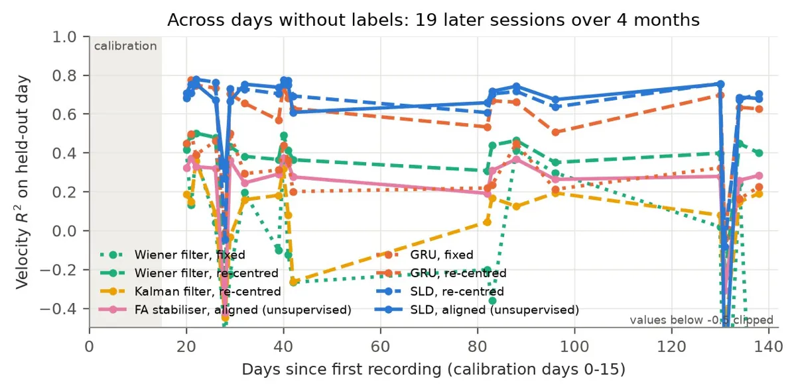

2026 · offline decoding on public data; closed loop simulated
BCI Projects
Four brain–computer interface projects on public neural recordings; with no new labels, the cursor decoder averages R² 0.72 on held-out days up to day 138, against 0.42 for a Wiener filter.
Code and write-ups on GitHub → Cursor decoding write-up (PDF) → Neuro Falcon follow-up →
The question
A cursor brain–computer interface is only as useful as its worst day. The neurons an implant records drift from day to day, so a decoder trained once slowly stops working, and asking someone to recalibrate every morning is a real cost.
These four projects work on public neural recordings to see how far careful decoding gets without new labels, and where it stops.
Setup
Telepathy decodes cursor movement across months from a monkey’s motor cortex (Zenodo 583331, 24 sessions), scored in simulated bits per second. Speech turns attempted speech into phonemes and words (Brain-to-Text ’25): 38.8% phoneme error with a causal Conformer on 426 held-out sentences.
Assisted Robotic Arm decodes 7-DoF arm movement and adds shared autonomy that knows the decoder’s mistakes (FALCON H1): simulated grasp success goes from 2% to 100% with assistance. Blindsight goes the other way, a learned, safety-bounded stimulation encoder for 1,024 sites in visual cortex, in simulation because no public human V1 stimulation data exists: percept fidelity SSIM 0.84 against 0.73.
How it works
- Count spikes per electrode, every 20 ms
- Re-centre each channel on the new day
- Per-day adapter, starting as identity
- Shared causal GRU latent model
- Velocity head drives the cursor
“No new labels” means re-centring: each channel’s mean and spread are recomputed from the new day’s unlabelled spikes, which costs nothing.
Results
Calibrated on 5 days (days 0–15) and tested on 19 held-out days from day 20 to day 138. On the 17 days without an electrode re-mapping, the re-centred decoder averages R² 0.718, against 0.662 for a plain GRU, 0.422 for a re-centred Wiener filter and −0.037 for a Wiener filter left as it was trained.
Counting all 19 days, it’s 0.636 against 0.353.

What didn’t work
Two held-out days (28 and 131), when the electrodes were re-mapped, break every re-centred decoder: R² near 0. Unsupervised alignment on top mostly didn’t help (0.706 against 0.718). Every bitrate is simulated, and it’s one animal, one arm, one array.
In the Neuro Falcon follow-up, even the best method reaches only 0.21 and 0.15 on the last two held-out days, against 0.42–0.45 on the earlier ones, and there are only 4 held-out days.
What’s next
Neuro Falcon: submit the re-normalising decoder to the FALCON leaderboard, test whether channel statistics alone explain the late-day gap, and try re-normalising continuously.